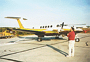
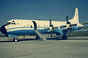

The airport for the Southern Study Area was the Prince Albert Airport, located about 90 km south from BOREAS Operations in Candle Lake.
 Location of the SSA within Canada. |
Location of the Prince Albert Airport, south of the SSA. |
| SSA Prince Albert Airport [actually, the location of the RSS-11 Sunphotometer at the airport] also called SSA-999-YPA01 (click here for detailed info) |
||
| Latitude: 53.20004 | UTM Easting: 454320.6 | BOREAS X: 354.73 |
| Longitude: -105.68383 | UTM Northing: 5894742.2 | BOREAS Y: 258.25 |
| Elevation (ASL): 425 m | UTM Zone: 13 | |
The RSS-11 Sunphotometer at the airport |
The NOAA Long-EZ Ultralight plane |  The NASA C-130 |
 The NASA Helicopter |  The University of Wyoming King Air |
 The Ontario Chieftain |  The NRC Twin Otter |
|  The NCAR Electra | |
Related Pages:
 BOREAS Home
BOREAS Home
 Study Region Overview
Study Region Overview
 Southern Study Area (SSA)
Southern Study Area (SSA)
 SSA Airport (Prince Albert)
SSA Airport (Prince Albert)
 NSA Airport (NSA-Ops)
NSA Airport (NSA-Ops)
Revison Date: January 25, 1999
{kind=link}
{kind=link}
{kind=link}
{kind=link}